CS184/284A Fall 2026 Homework 4 Write-Up
Link to webpage: https://cal-cs184-student.github.io/hw4-parsas-one-last-time-writeup/
Link to GitHub repository: https://github.com/cal-cs184-student/hw4-parsas-one-last-time
Overview
In this homework, we built a mass-spring cloth simulator and wrote GLSL shaders to render it. The cloth is a grid of point masses connected by structural, shearing, and bending springs. At each time step, we summed the spring and external forces, updated positions with damped Verlet integration, limited how far springs could stretch, and resolved collisions with spheres, planes, and the cloth itself. For rendering, we wrote diffuse, Blinn-Phong, texture, bump, displacement, and mirror shaders, plus a custom Fresnel water shader for extra credit.
The coolest part was watching the cloth go from a flat grid to something that actually looked like fabric. Getting damping and the stretch limit right made the biggest difference: once they were tuned, the cloth stopped bouncing too much or stretching too far.
Part 1: Masses and springs
We implemented Cloth::buildGrid by first placing the point masses in row-major order. For horizontal cloth, we spread the masses across the xz plane at y = 1. For vertical cloth, we spread them across the xy plane with a small random z offset so no two masses started in exactly the same place. We marked a mass as pinned if its grid index appeared in the scene's pinned list, which kept the right corners fixed.
After creating all the point masses, we added the three spring types. Structural springs connect each mass to its left and upper neighbors, shearing springs connect it to its upper-left and upper-right diagonal neighbors, and bending springs connect it to the masses two positions away horizontally and vertically. We created the springs only after all the masses existed, so the pointers into the point_masses vector stayed valid.
|
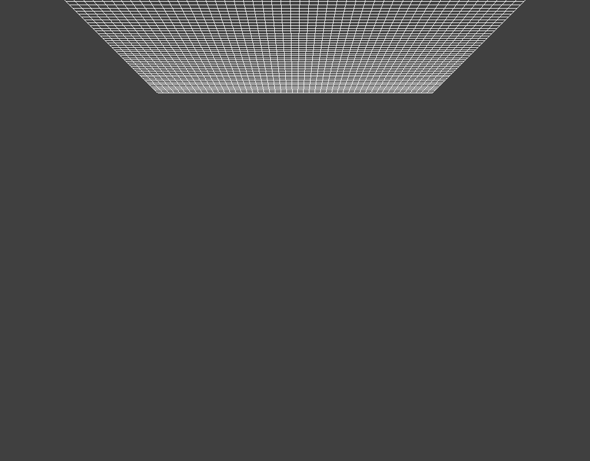 scene/pinned2.json wireframe without shearing constraints. |
scene/pinned2.json wireframe with only shearing constraints. |

scene/pinned2.json wireframe with structural, shearing, and bending constraints enabled. |
|
Part 2: Simulation via numerical integration
At the start of each step in Cloth::simulate, we reset every point mass's force accumulator. We converted each external acceleration, such as gravity, into a force with F = ma and added it to every point mass. For each enabled spring, we applied Hooke's law along the line between its two endpoints. Bending springs used 0.2 * ks, which made them weaker than structural and shearing springs.
Once forces were accumulated, we updated each unpinned point mass with damped Verlet integration. We computed the new position from the current position, the damped displacement since the previous step, and the acceleration from the current forces, and saved the old position in last_position. We skipped pinned masses so they stayed fixed. Finally, we enforced the Provot constraint by shortening any spring longer than 110% of its rest length. If neither endpoint was pinned, we moved each one by half the correction; if one was pinned, the unpinned endpoint took the full correction.
Lowering ks made the cloth stretchier, so it sagged farther and took a looser shape before settling. Raising ks made the springs resist deformation more, so the cloth held its shape and looked stiffer. Increasing density made each point mass heavier, so the cloth pulled down harder against the springs. Increasing damping removed energy faster, so the cloth oscillated less and settled sooner; with very low damping, it kept bouncing and swinging for a while before coming to rest.
|
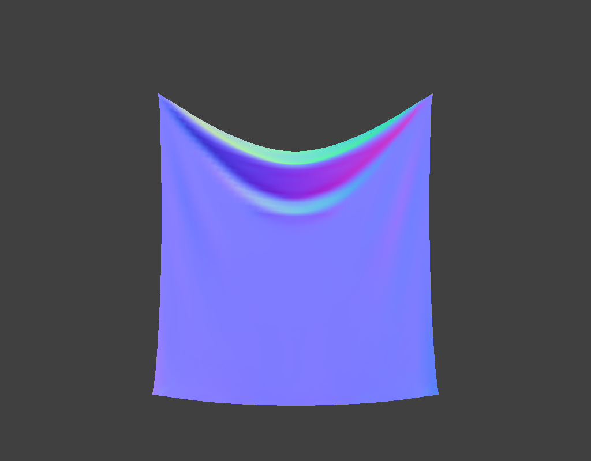 ks: looser, stretchier cloth. |
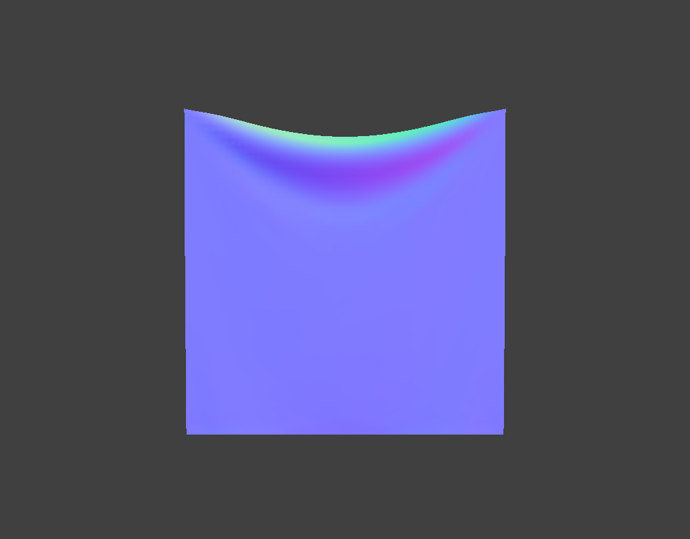 ks: stiffer cloth with less stretch. |

|
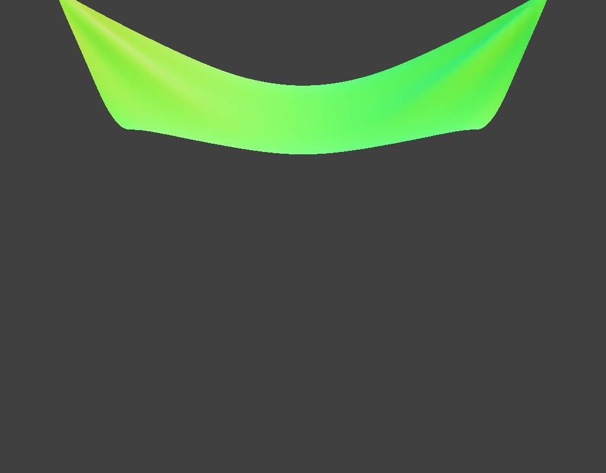 scene/pinned4.json shaded cloth at final rest with default parameters. |
Part 3: Handling collisions with other objects
For sphere collisions, we checked whether a point mass was inside the sphere by comparing its squared distance from the center to the squared radius. If it was, we projected it outward onto the sphere's surface to get the tangent point. We then took the correction vector from the mass's previous position to that tangent point, scaled it by \(1 - f\), where \(f\) is the sphere's friction, and set the new position to the previous position plus the scaled correction. This kept masses outside the sphere, and friction slowed their sliding.
For plane collisions, we checked which side of the plane the point mass was on before and after the time step. If the side changed, the mass had passed through the plane. In that case, we found where its path crossed the plane, offset that point by SURFACE_OFFSET toward the side the mass came from, and applied the same friction-scaled correction from the previous position. In Cloth::simulate, we checked every point mass against every collision object after Verlet integration and before the spring-length correction.
|
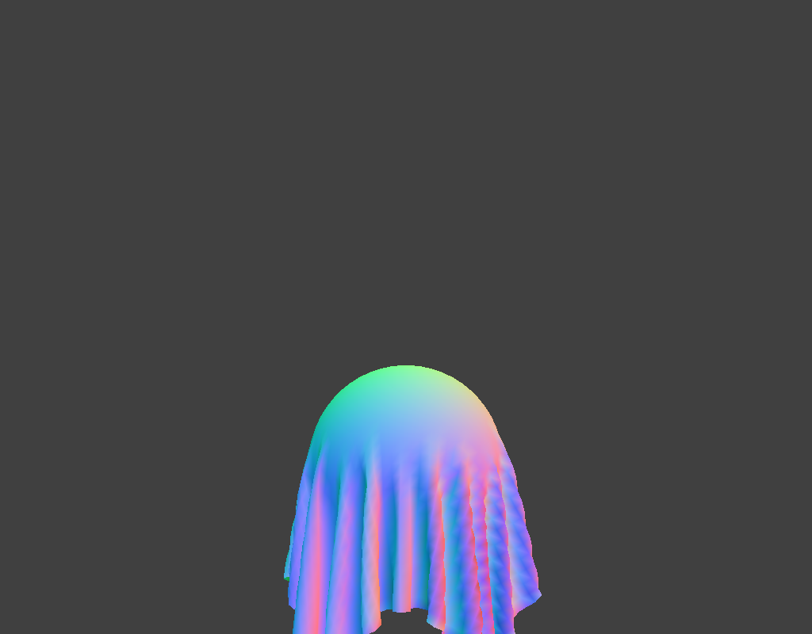 ks = 500: looser cloth with more sagging and stretching. |
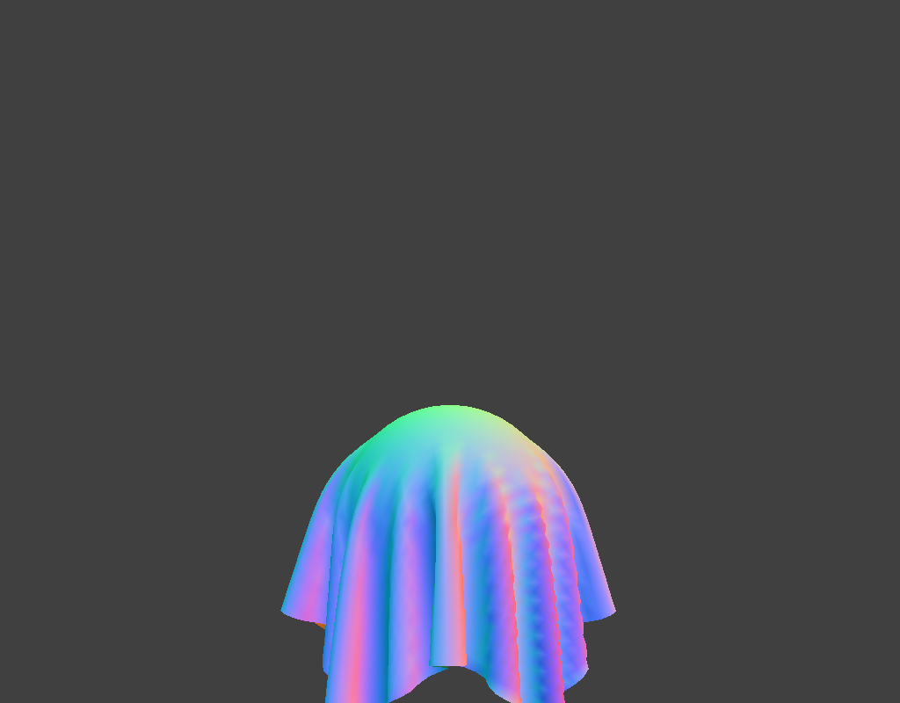 ks = 5000: default stiffness with moderate draping. |
|
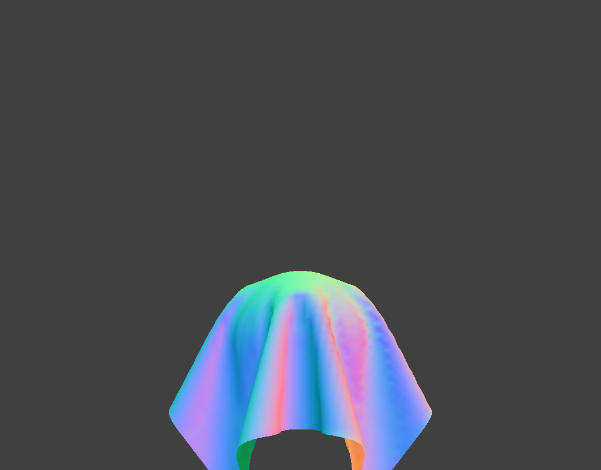 ks = 50000: much stiffer cloth with less sagging and sharper tenting around the sphere. |
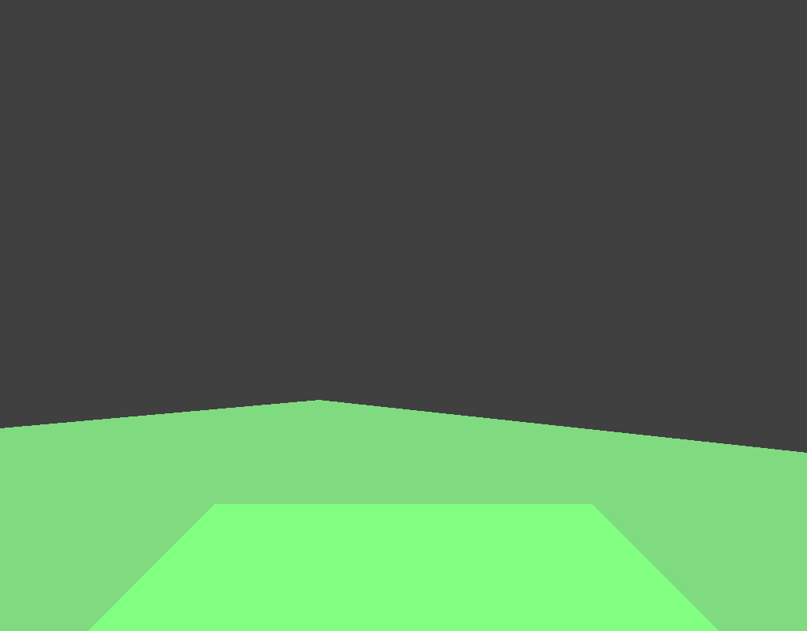 scene/plane.json. |
The sphere results followed the expected stiffness trend. With ks = 500, the springs allowed more stretch, so the cloth deformed more and sank around the sphere. With the default ks = 5000, the cloth still draped naturally but kept more of its shape. With ks = 50000, the cloth barely stretched, so it stayed taut and formed a stiff tent over the sphere.
Part 4: Handling self-collisions
We implemented self-collision with spatial hashing. At the start of each self-collision pass, we rebuilt a hash table mapping 3D grid cells to the point masses inside them. We used the assignment's suggested cell size: \(3 * width / num\_width\_points\), \(3 * height / num\_height\_points\), and the larger of those two for the depth. That way, each point mass was compared only against nearby masses instead of every other mass in the cloth.
For each point mass, we looked up the other masses in its cell, skipping the mass itself. If another mass was closer than \(2 * thickness\), we computed the correction that would push the current mass out to exactly that distance. We averaged these corrections and divided by the number of simulation steps before applying them, so the cloth didn't jump suddenly in a single frame.

|

|
|
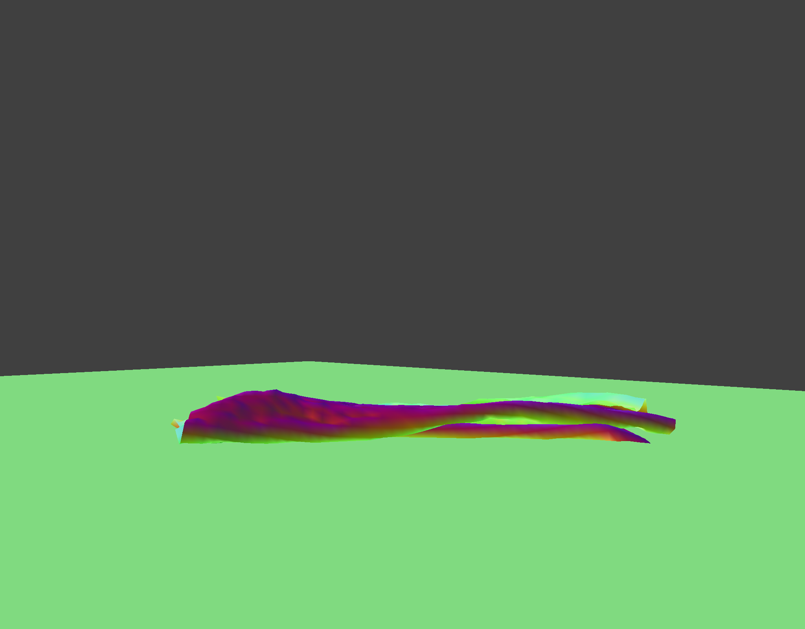 |
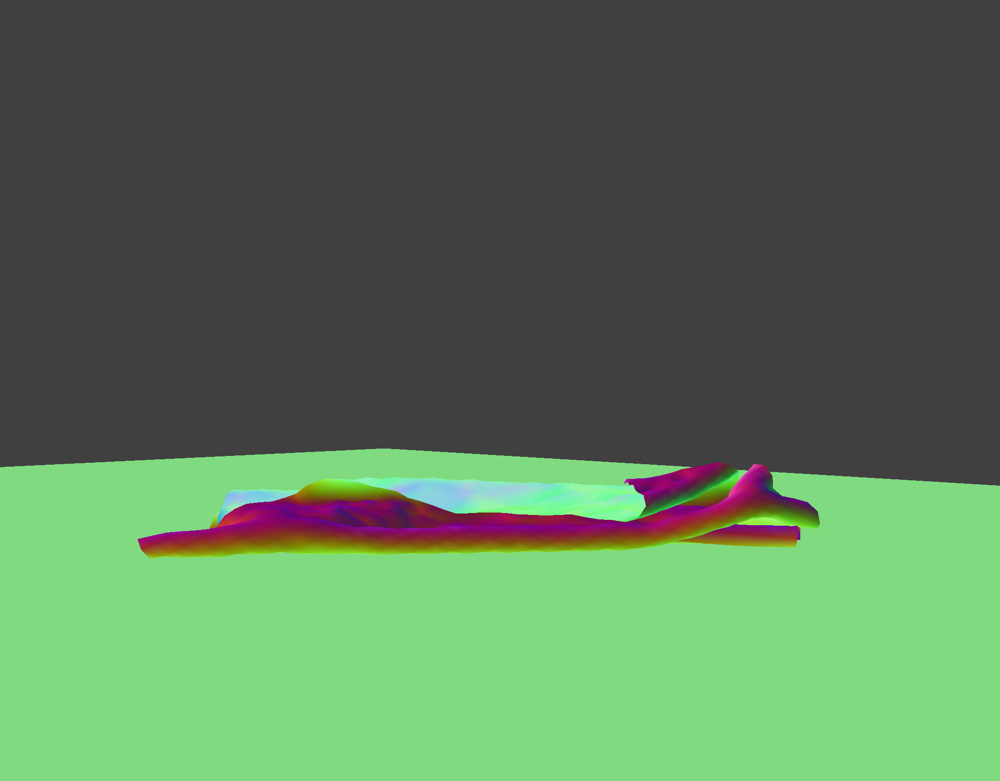 |
|
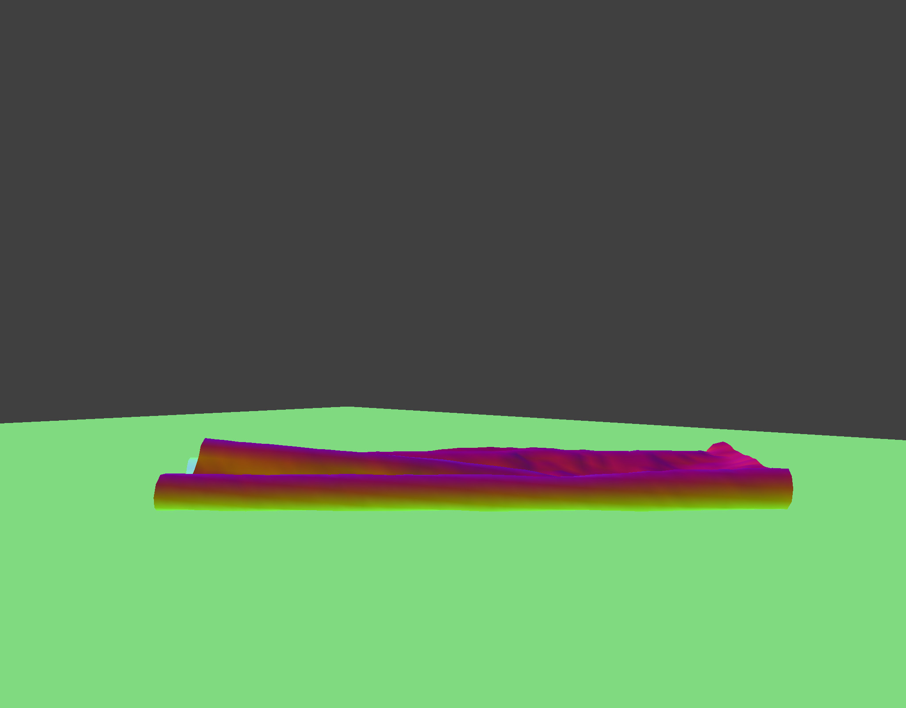 ks comparison: the cloth resists stretching more and forms a stiffer, flatter fold pattern. |
|
With lower density, the cloth responded more lightly to the same forces, so its folds looked less compressed. With higher ks, the cloth stretched less and kept broader, stiffer folds. The default settings landed between the two: the folds were pronounced but flattened over time as self-collision kept pushing the layers apart near the plane.
Part 5: Shaders
A shader is a program that runs on the GPU to decide where geometry appears on screen and what color each pixel is. It uses a vertex shader and a fragment shader, which run in parallel across many vertices and pixels. The vertex shader runs once per vertex and transforms its position into screen space, and it can also move the vertex, as in displacement mapping. It passes the vertex's position, normal, and UV to the rasterizer, which interpolates them across each triangle. The fragment shader runs once per pixel and uses those interpolated values to compute the pixel's color. Lighting and material effects come from how it combines the normal with the light direction, view direction, and texture lookups.
Blinn-Phong shading
Blinn-Phong adds three terms to get a surface's color. Ambient is a constant term so surfaces away from the light look dimmer instead of black. Diffuse is brighter where the surface faces the light more directly, so the top of the cloth is brighter than its sides. Specular adds highlights where the normal is close to the half-vector between the light and view directions, which creates the bright streaks on the cloth's folds.
|
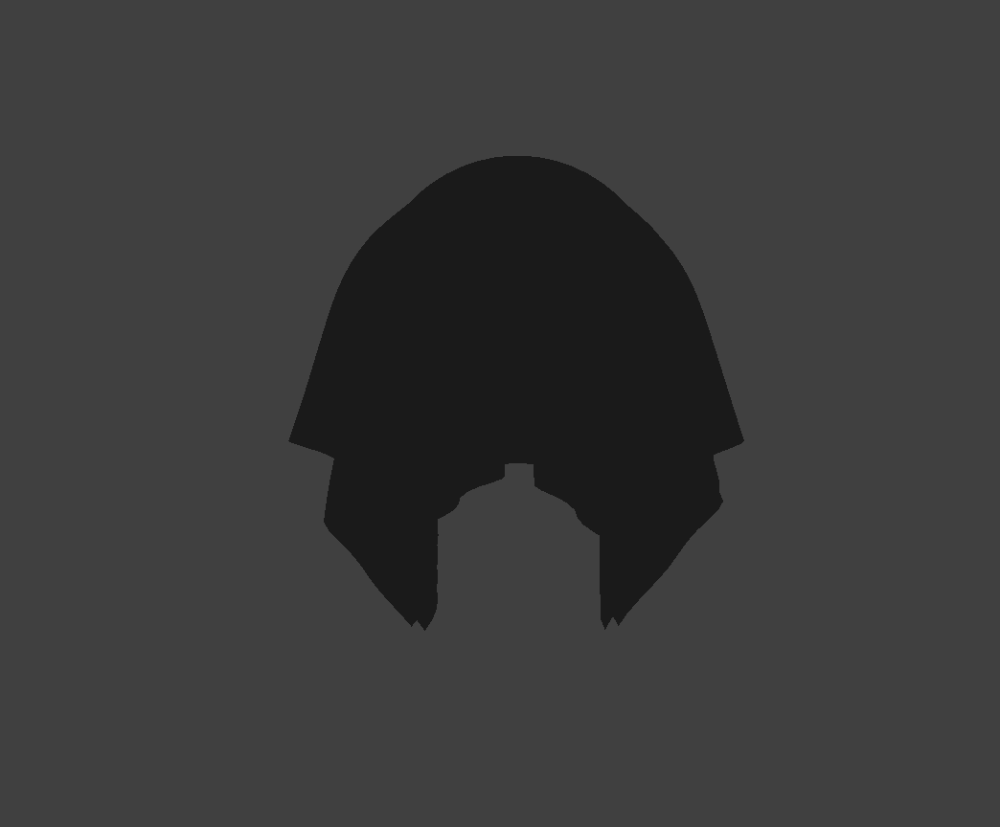 |

|

|

|
Texture mapping

Bump and displacement mapping

|
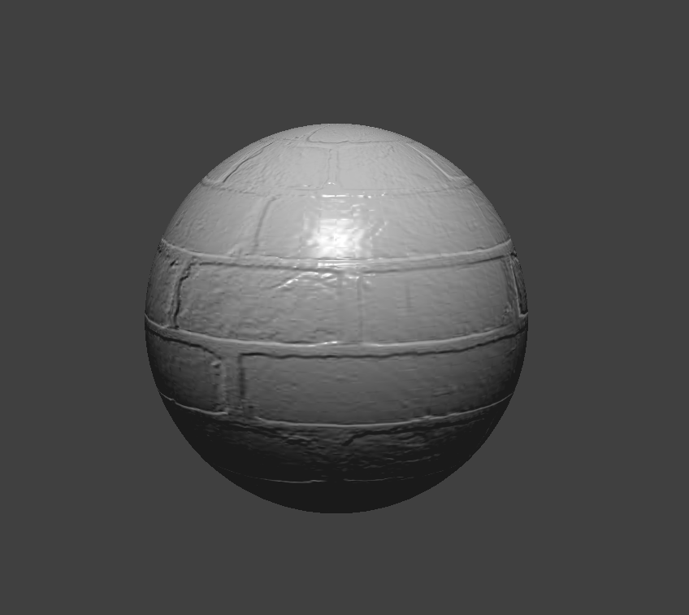 |

-o 16 -a 16. |

-o 16 -a 16. |

-o 128 -a 128. |

-o 128 -a 128. |
The two shaders looked almost the same because the product of the normal and height scaling was the same for both. However, they had different geometries because only displacement changes the mesh itself. Bump mapping only changed lighting, so the outline of the sphere stayed round, whereas displacement moved real vertices, so it depended on mesh resolution. At 16×16 we couldn't really see this because there were too few vertices, but this was much more visible at 128×128 resolution.
Environment-mapped reflections

|

|
Extra credit: Fresnel water shader
For our custom shader, we blended the water texture with the environment reflection using Schlick's Fresnel approximation, \(F = F_0 + (1 - F_0)(1 - n \cdot v)^5\) with \(F_0 = 0.1\). Surfaces facing the camera mostly showed the water texture, while surfaces at grazing angles became more reflective, like real water seen from a shallow angle. We also added a specular highlight to make the surface look wet.
|
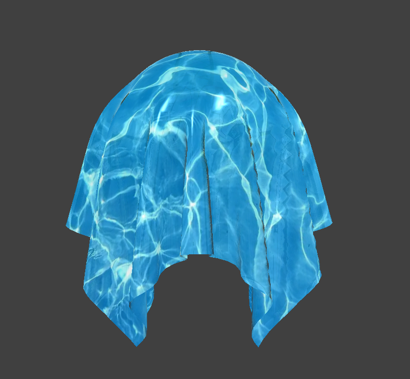 |

|
(Optional) Part 6: Extra Credit - Additional cloth simulation features!
Wind
We added wind to the simulator. We gave each point mass a force along its normal based on how directly the wind hit that part of the cloth, using the wind relative to the point's own velocity. Parts facing the wind caught more of it, and parts edge-on to it caught almost none. We scaled the wind's speed based on each point's position and the elapsed time, so that gusts looked like they moved across the cloth. We also added GUI controls for the wind's x, y, and z components and its strength.
With wind at (4, 4, 0) m/s and strength 80, the cloth's corners lifted and flared out. We left it running and watched the cloth get dragged more and more sideways until it fell!

|
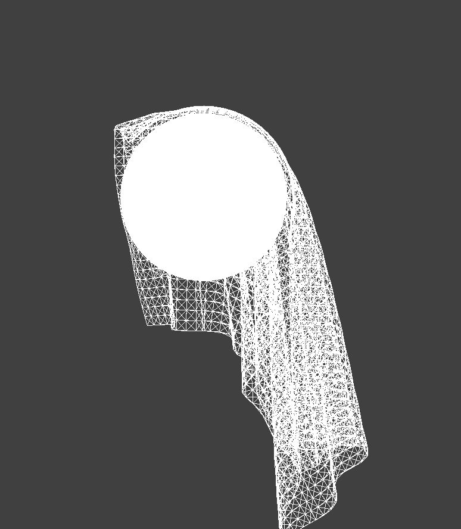 |
|
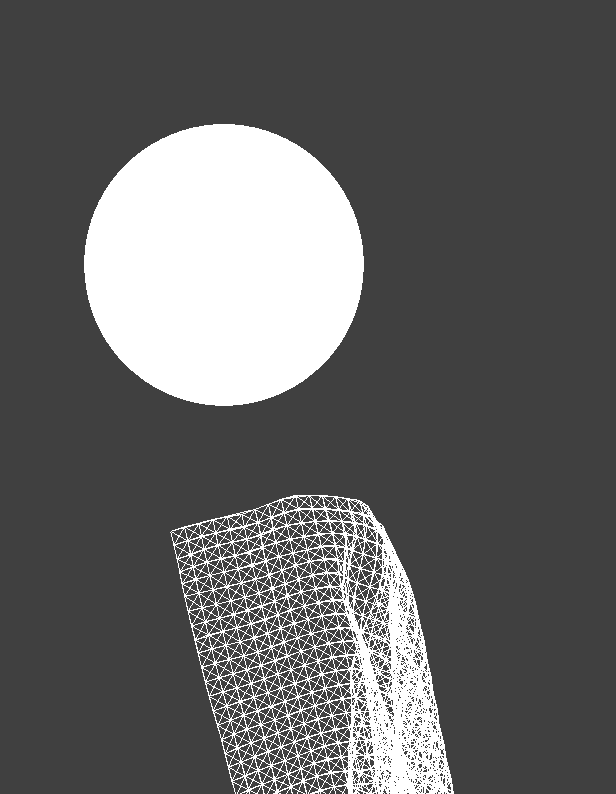 |
|
AI Acknowledgement
We used Claude to explain concepts such as the TBN matrix, cube map reflections, and the difference between bump and displacement mapping, and to help debug our code.